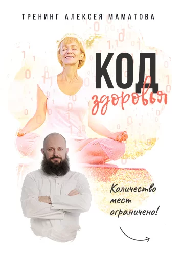
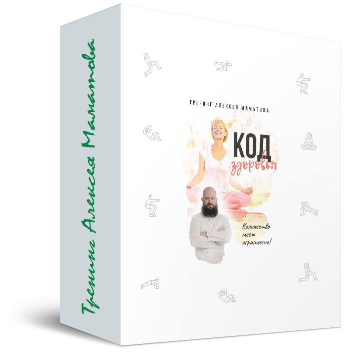
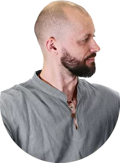
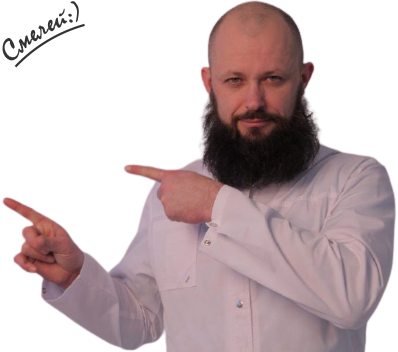

Получите доступ к трансляциям «Код здоровья» по выгодной
цене 1500 999 рублей!
До конца акции осталось:
0
0
дня
0
0
часов
0
0
минут
0
0
секунд
Внимание! Количество мест на трансляции ограничено! Успейте зарегистрироваться и забронировать место.
Содержание курса

- Почему осень – поворотная точка для всего нашего здоровья? А. Маматов учит основам укрепления здоровья в преддверии зимних холодов.
- Что такое «Код Здоровья» и какую пользу всему организму приносит комплексная система оздоровления?
- Какие правила требуют соблюдения в соответствии с циркадными ритмами и сезонными климатическими изменениями?
- Как это – быть здоровым вопреки: экологии, качеству воды, продуктам на прилавках и ухудшающимися условиями жизни?
- Ученые уверены: люди живут гораздо меньше срока, отведённого природой для жизни.
- Какие факторы сильнее влияют на здоровье зрелого и пожилого человека?
- Старость – не в радость? Глупости! Старость может и должна быть прекрасным временем для себя и своих близких.
- Возрастной износ организма – неизбежность, или мы всё-таки в силах влиять на него и запускать негативные процессы вспять?
- Почему болезнь никогда не приходит в одиночестве? Как не дать болезням привести своих «подруг»?
- Иммунная защита – миф алчных фармацевтов или реальный щит от множества заболеваний?
- Наследственность и крепкое здоровье в пожилом возрасте – есть ли связь, и в чем она выражается более всего?
- Как быть здоровым вопреки плохой наследственности?
- Что имеют в виду китайские врачеватели, говоря: «Жить Осенью, не напрягаясь»?
- Польза осенних дождей для здоровья нервной системы и нормализации давления.
- Десять вредных пищевых привычек, которые сокращают нашу жизнь минимум на десять лет.
- Как волхвы Древней Руси «учили здоровью» простых людей, и что из их учений применимо сегодня?
- Как древнерусские старцы умудрялись сохранять здоровье до глубокой старости и рожать при этом малых деток? Чудеса, сказки, или строгое соблюдение правил матушки природы?
- Как правильно болеть: о том, как преодолевать ОРВИ, ОРЗ, грипп, ангину, бронхит и другие популярные в народе заболевания.
- Как сохранить своё здоровье в отечественных реалиях: тотальное загрязнение воздуха и воды, лесные пожары, ухудшение экологии, радиационное загрязнение и изменение климата?
- Чеснок – золотой страж нашего здоровья! Правила хранения, активации и приготовления целебных настоев и блюд с чесноком.
- Зелёный – традиционный цвет здоровья. Применяем правило зеленого цвета в формировании нашей еженедельной продуктовой корзины.
- Оздоровление ЖКТ в традиционной китайской медицине
- О чём ещё молчит «Чернобыль»? Такое не принято сообщаться с экранов ТВ.
- Тайны психологии здорового общения: какое влияние на здоровье оказывает наша социализация? Можно ли справляться с болячками через общение с нужными людьми?
- Здоровое долголетие – вопрос наследственности, или есть ещё какой-то секрет?
- Может ли здоровый образ жизни быть не капризом или прихотью, а нормальным положением дел в семье?
- Простые правила формирования новых полезных для здоровья привычек.
- Карта здоровья внутренних органов: находим боль, выбираем метод, лечим.
- Упражнения для развития памяти, улучшения мышления, устранения возбудимости и апатии.
- Опорно-двигательная система, правила её оздоровления и предупреждение заболеваний.
- Сон – всему голова? Маматов раскрывает секреты целительного сновидения.
- Что знали «астрономы» Майя и какие «секреты бессмертия» жадно искали испанские конкистадоры?
- Единство со стихиями: индейское правило выздоровления на каждый день.
- Какие секреты долголетия передали нам наши сибирские бабушки? Правила приготовления и обработки воды, пищи.
- Почему болезнь никогда не приходит в одиночестве? Как не дать болезням привести своих «подруг»?
- Новые виды защиты от сердечно-сосудистых заболеваний.
- Обогащаем программу по оздоровлению и оживлению мозга несколькими свежими практиками.
- Ещё раз о чистках: что из известного лучше всего помогает в преддверии зимы?
- «Слёзы гор» и «Сок скалы» - в чем разница и при каких недугах что полезнее?
- Правила приёма и тонкости использования для улучшения эффекта естественных минеральных комплексов.
- Какие витамины и когда полезнее? Что нужно знать об аптечных, в том числе детских витаминах?
- Соки: какие полезны, какие вредны и как в них разбираться без помощи профессионала?
- Суставы: боль, скрип, хруст, ограниченность в движении. Новые виды проработки проблемных мест наших больных конечностей.
- Готовим суставы и связки к холодам: лайф-хаки от сибирских костоправов.
- Сердце, воздух и вода – крепнем мы везде, всегда! Воздушные и водные процедуры для здоровья сердца.
- Проблемы ЖКТ и их решение естественным способом при помощи трав и пальцевой проработки.
- Алтайское травознайство в каждый дом! Обучение травоведению: основы, применение, продвинутый уровень.
- Аллергия, псориаз, экзема: устранение симптомов через лечение первопричин.
- Улучшение состояния позвоночника через парвильное укрепление мышечного каркаса спины.
- Зрение: лучшие методики естественной коррекции при помощи последних открытий.
- Устранение сбоев в работе почки и в мочеполовой системе.
- Чистка вен, сосудов и лимфодренаж без препаратов и операций.
- Эндокринная система: нормализация выработки гормонов, избавление от узлов в щитовидке, практики для диабетиков.
- Мягкая коррекция веса и жиросжигание без тренажеров – такого вам не расскажут в фитнес-центрах.
- «Зеленая Кухня»: рецепты блюд, смузи и коктейлей, улучшающих здоровье и придающих жизненный тонус в кратчайшие сроки.
Отзывы наших слушателей
Об авторе курса

Алексей Маматов
Автор программ естественного оздоровления организма, среди которых: «Древо Жизни», «Острое Зрение», «АллергоСТОП», «МЕГА-Мозг» и другие.
Регистрация на курс
Получите доступ к трансляциям «Код здоровья» по выгодной
цене 1500 999 рублей!
Внимание! Количество мест на трансляции ограничено! Успейте зарегистрироваться и забронировать место.
